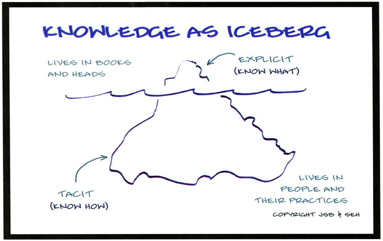

What is Machine Learning?
By wikipedia
CS & Stats
Machine learning is a subfield of computer science and statistics that deals with the construction and study of systems that can learn from data, rather than follow only explicitly programmed instructions.
AI&OPT
Besides CS and Statistics, it has strong ties to artificial intelligence and optimization, which deliver both methods and theory to the field.
Applications
Example applications include spam filtering, optical character recognition (OCR), search engines and computer vision. Machine learning, datamining, and pattern recognition are sometimes conflated.
How to study Machine Learning
Approaches step by step (how I do it)
Step 1: Statistics
Method of Ststistics(Tsinghua Book, Chinese)
Advanced Mathematics(TongjiBook, Chinese1&2)
Introduction to Statistics(Princeton)
Step 2:Algorithms
Introduction to Algorithms, Third Edition(MIT course&book)
Step 3:Machine Learning
Machine Learning(Stanford)
Foundations Machine Learning(Taiwan)
Neural Networks for Machine Learning(Tonronto)
Step 4: Data Mining
Mining Massive Datasets(Stanford)
Introduction to Data Mining(book)
-
Step 5: Programming Language
Python/C++/R/Java
Python's Numpy and Scipy libraries are similar with MATLAB, but can be integrated into a web service and used in Hadoop . C++ will be needed to speed code up. R is great for statistics, and Hadoop is written in Java.
-
Step 6:Distributed Computing
Distributed Algorithms(KTH)
Distributed Algorithms, Systems, and Programming(Microsoft)
Become familiar with the Hadoop sub-projects
-
Step 7: Expertise in Unix Tools
Lunix(Chinese 163 cloud classroom)
Since all of the processing will most likely be on linux-based machine (Hadoop doesnt run on Window I believe), you will have access to these tools.
-
Step 8:advanced signal processing techniques
feature extraction is one of the most important parts of machine-learning.If your features suck, no matter which algorithm you choose, your going to see horrible performance. Depending on the type of problem you are trying to solve, you may be able to utilize advance signal processing algorithms.
- 
-
Step 9:Conclution
Step1-8 mentioned above are nessary but certainly not sufficient knowledge for you to understand Machine Learning well. Practice and read as much as you can. In your free time, read papers.Best wishes！